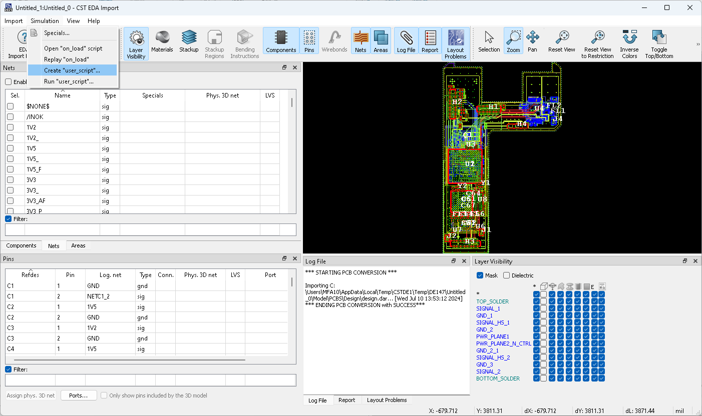
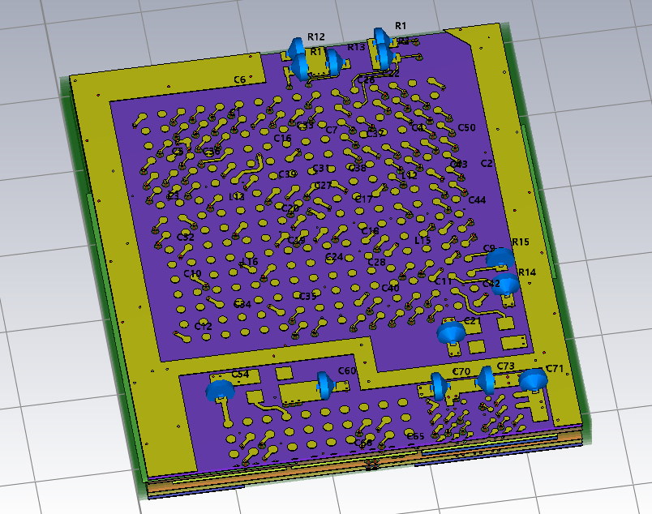
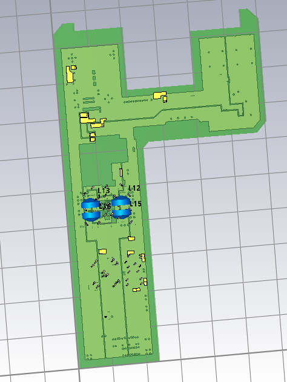
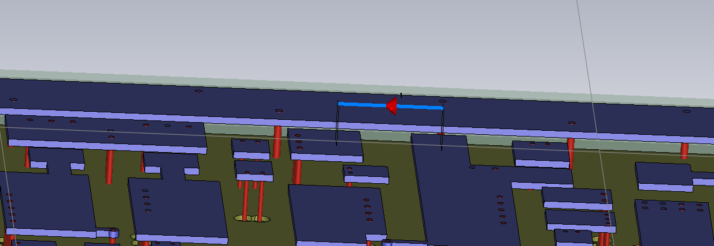
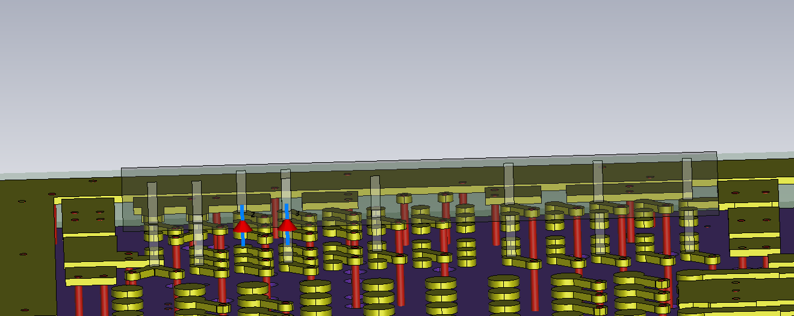
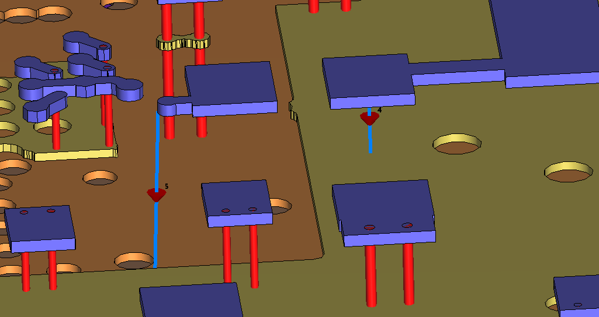
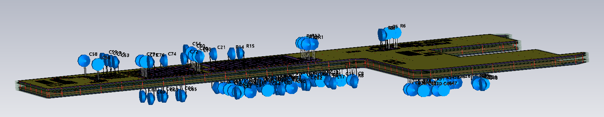

Settings for 3D simulation¶
When creating a 3D model for a PCB or package, PCB.simulation_settings control the 3D model generation, and allow adding excitations and monitors.
Using the methods and properties of the “SimulationSettings” class, it is possible to modify the settings. The details on what properties can be modified can be found in the section of the SimulationSettings in the Online Help.
Generate code from Import dialog¶
It is possible to use the “CST EDA Import” dialog, to create the settings needed and retrieve them as Python code.
The import dialog is opened when importing a PCB to 3D, and can be reopened afterward via the context menu of the navigation tree. More information about the import dialogue can be found here.
The 3D simulation settings can be edited in the import dialog. The following section will show some examples. Once your settings are done, select “Simulation > Create ‘user_script’…” as shown below.

Now choose a location and name for the script. The script will be opened afterwards. To use the settings you created, copy the generated code to your script and adjust it as needed.
If no location is set, the generated files are located in a temporary folder. You should save them in a secure place or copy the generated code to another file.
Examples¶
In the following, we show a few examples of what is possible with the procedure shown above.
Before applying any of the changes, we need to create an instance of a PCB.
This is done as usual by calling pcb_api.PCB.convert_from() and passing the path to our ECAD design file.
After this, we can insert the code for handling settings for our 3D simulation.
Preparations:
import cst.interface
from cst.eda import pcb_api
import cst.units
from pathlib import Path
import tempfile
data_dir = Path(cst.interface.install_paths.root()) / "Online Help" / "PythonTutorial" / "data"
de = cst.interface.DesignEnvironment.connect_to_any_or_new()
project_dir = Path(tempfile.mkdtemp())
print(f"Working in temporary directory: {project_dir}")
pcb_file = data_dir / 'cst_phone.tgz'
Area Selection¶
We can limit the area of the PCB that is imported to the 3D project.
# Create an instance of a PCB
pcb = pcb_api.PCB.convert_from(pcb_file)
# SimulationSettings.selection_areas
pcb.simulation_settings.delete_all_selection_areas(disable_area_restrictions=False)
sel_area = pcb.simulation_settings.select_polygonal_area(
[
(-300, 2160),
(-300, 1100),
(1440, 1100),
(1440, 2160),
],
enable_area_restrictions=False,
unit=cst.units.mil,
)
sel_area.layers = [
"BOTTOM_SOLDER",
"GND_1",
"GND_2",
"GND_2_1",
"GND_3",
"PWR_PLANE1",
"PWR_PLANE2_N_CTRL",
"SIGNAL_1",
"SIGNAL_2",
"SIGNAL_HS_1",
"SIGNAL_HS_2",
"SUBSTRATE-1",
"SUBSTRATE-2",
"SUBSTRATE-3",
"SUBSTRATE-4",
"SUBSTRATE-5",
"SUBSTRATE-6",
"SUBSTRATE-7",
"SUBSTRATE-8",
"SUBSTRATE-9",
"TOP_SOLDER",
]
pcb.simulation_settings.restrict_to_selected_area = True
# create a new MWS project
prj = de.new_mws()
# import the pcb to the project, using the default ldb_name='pcb.ldb'
pcb.import_to(prj)
As seen in the code above we can select an area
by passing pcb.simulation_settings.select_polygonal_area a list of coordinates.
We also set the selected layers of this area.
In our case, these are all layers of the PCB.
Before importing the PCB to a 3D project,
we need to enable pcb.simulation_settings.restrict_to_selected_area by setting it to True.
Now we can import the PCB to a project as usual.
In the image below, we can see the selected area of the PCB imported to a 3D project.

Updating the PCB Import¶
For the existing project, changing the import settings and updating the project is fairly easy.
Here we unmount all components, meaning that no lumped-element models will appear anymore:
for comp in pcb.components:
comp.is_mounted = False
pcb.update_in(prj) # using the default ldb_name='pcb.ldb'.
Please observe that the lumped-element models are gone.
What is happening under the hood is the following:
the PCB is saved in
<project folder>/Model/3D/<ldb_name>the EDA import dialog is called (default: non-GUI), re-running the 3D creation
the project history is updated, i.e. re-run
Bringing the lumped elements back is of course as easy:
for comp in pcb.components:
comp.is_mounted = True
pcb.update_in(prj) # using the default ldb_name='pcb.ldb'.
The above call needs to be modified by adding ldb_name='mypcbname.ldb if the ldb file in the <project folder>/Model/3D has a different name.
Of course, more than one PCB import into one 3D project can be handled.
Net Selection¶
Limiting the nets of the PCB is also fairly easy to implement.
# Create an instance of a PCB
pcb = pcb_api.PCB.convert_from(pcb_file)
# Net selection
pcb.simulation_settings.restrict_to_selected_nets = True
pcb.simulation_settings.selected_nets = [
"1V2",
"1V2_",
"1V5",
"1V5_",
"1V5_F",
"3V3",
"3V3_",
"3V3_AF",
"3V3_P",
"3V3_PF1",
"3V3_PF2",
"3V3_PF3",
"3V3_P_",
"3V3_VRF",
]
# create a new MWS project
prj = de.new_mws()
# import the pcb to the project
pcb.import_to(prj)
As seen above, we also need to set the simulation_settings.restrict_to_selected_nets property of our pcb to True.
Then we can specify the nets we want to use
by setting the property simulation_settings.selected_nets to a list of strings corresponding to the nets.
The resulting PCB can be seen in the image below.

Port definition¶
Discrete ports can be defined by referencing component pins. The following code shows multiple examples of discrete ports.
# Create an instance of a PCB
pcb = pcb_api.PCB.convert_from(pcb_file)
# SimulationSettings.discrete_ports
# Create differential port between two pins
pin = pcb.component("C2").pin("1")
discrete_port = pcb.simulation_settings.discrete_port(pin)
discrete_port.use_pec_sheet = False
discrete_port.impedance = 100 * cst.units.Ohm
discrete_port.label = "C2_1_2"
discrete_port.reference_pins = ["2"]
# Create PEC-sheet ports at two pins with ground reference
pin = pcb.component("U8").pin("C3")
discrete_port = pcb.simulation_settings.discrete_port(pin)
discrete_port.use_pec_sheet = True
discrete_port.reference_nets = ["GND"]
pin = pcb.component("U8").pin("D3")
discrete_port = pcb.simulation_settings.discrete_port(pin)
discrete_port.use_pec_sheet = True
discrete_port.reference_nets = ["GND"]
# Create single-ended ports at two pins to ground plane
pin = pcb.component("C6").pin("1")
discrete_port = pcb.simulation_settings.discrete_port(pin)
discrete_port.use_pec_sheet = False
discrete_port.reference_nets = ["GND"]
pin = pcb.component("C6").pin("2")
discrete_port = pcb.simulation_settings.discrete_port(pin)
discrete_port.use_pec_sheet = False
discrete_port.reference_nets = ["GND"]
#
# create a new MWS project
prj = de.new_mws()
# import the pcb to the project
pcb.import_to(prj)
The first port is defined using the two pins of a component. Here “C2” and its pins “1” and “2” are used.
The result for this port is seen below. The port is created, where the component “C2” would have been.

The second and third ports are defined using a pin of a component and a reference net. The second port is between the pin “C3” of the “U8” component and the “GND” net. The third port is between the pin “D3” of the “U8” component and the “GND” net.
The resulting ports are shown below. The PEC sheet is shown in a transparent grey color.

The last two ports are defined between the pins of the component “C6” and the “GND” net. The “GND” reference is located on the ground plane layer below. This can be seen in the image below.

Special Settings¶
By default, the components on the PCB are elevated by 0.2mm. The following code changes this setting.
# Create an instance of a PCB
pcb = pcb_api.PCB.convert_from(pcb_file)
# Special Settings: Port elevation
pcb.simulation_settings.port_elevation_absolute = 5 * cst.units.mm
# create a new MWS project
prj = de.new_mws()
# import the pcb to the project
pcb.import_to(prj)
To change the elevation of our components on the PCB,
we need to change the simulation_settings.port_elevation_absolute property of the PCB.
In the code above, we set it to 5mm.
It is recommended to specify the unit as well as the PCBs length_unit is used as default unit.
The elevated components are shown in the image below.
